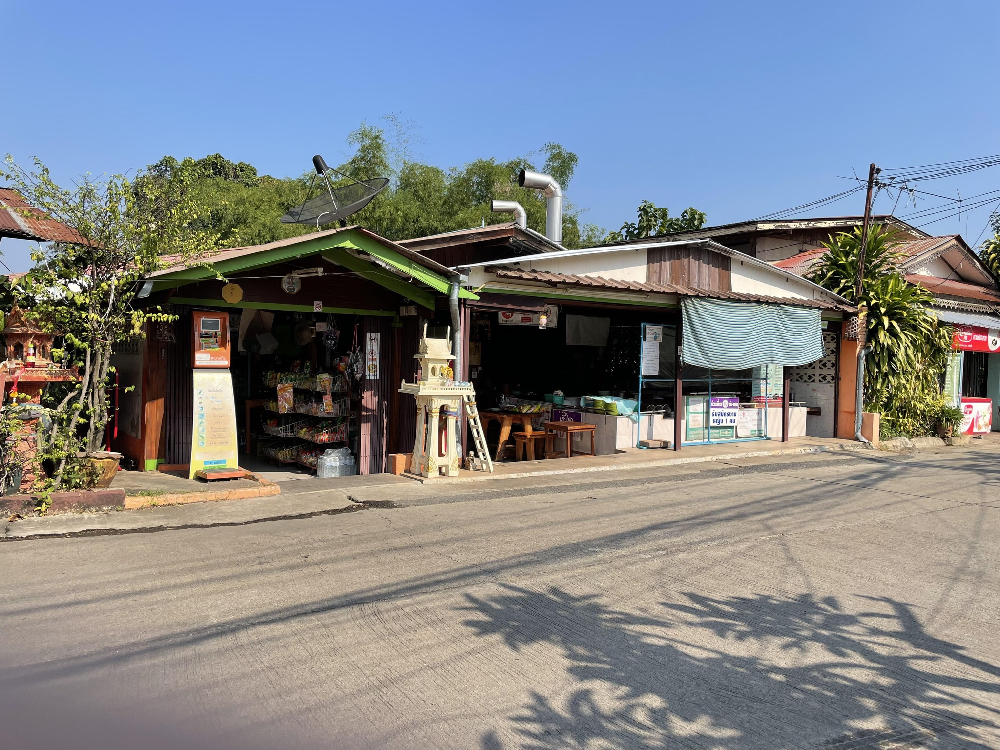
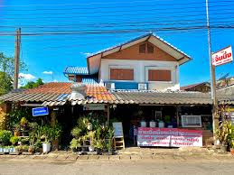
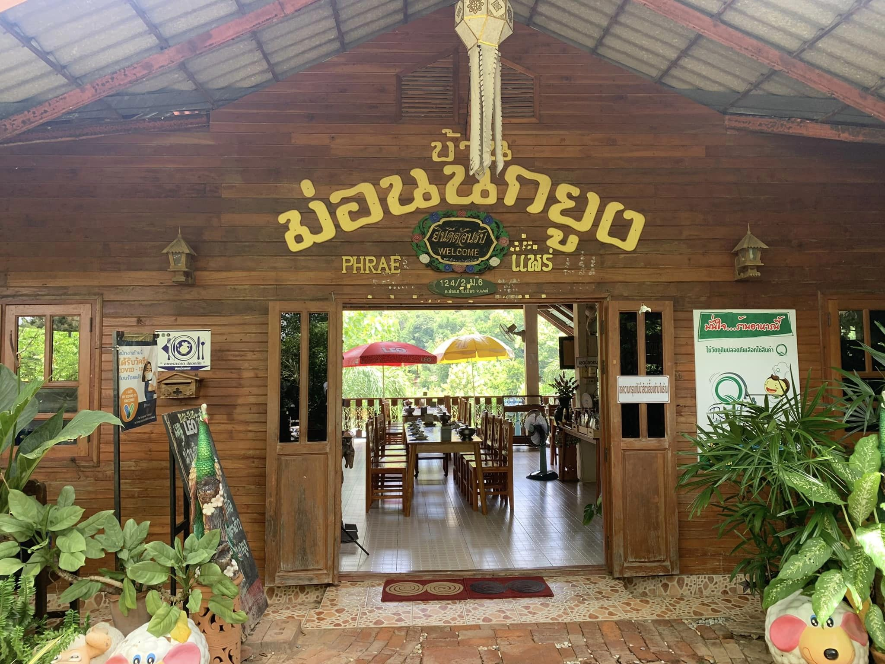
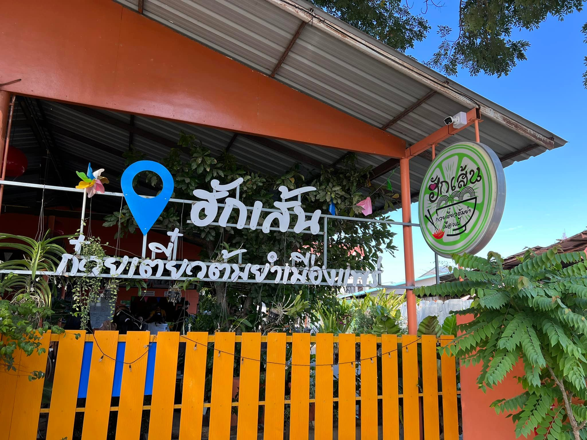
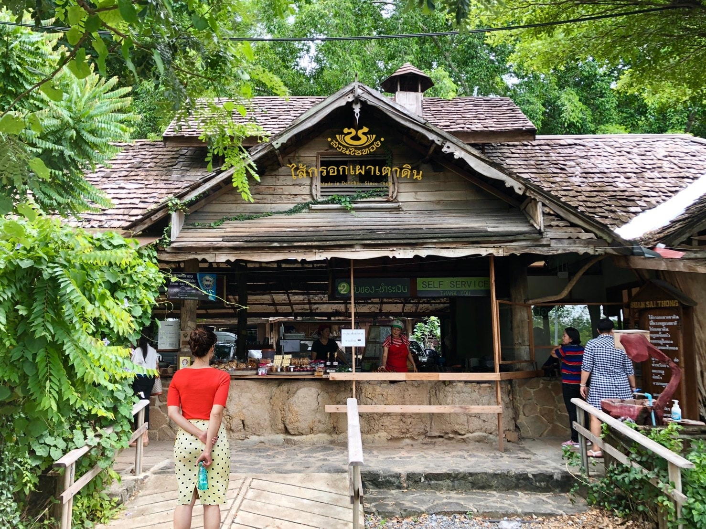

<html lang="en"></html>
<head>
    <meta charset="UTF-8">
    <meta http-equiv="X-UA-Compatible" content="IE=edge">
    <meta name="viewport" content="width=device-width, initial-scale=1.0">
    <title>Restaurant</title>
    <link rel="stylesheet" href="food.css">
    <link href="https://cdn.jsdelivr.net/npm/bootstrap@5.0.2/dist/css/bootstrap.min.css" rel="stylesheet" integrity="sha384-EVSTQN3/azprG1Anm3QDgpJLIm9Nao0Yz1ztcQTwFspd3yD65VohhpuuCOmLASjC" crossorigin="anonymous">
    <link rel="stylesheet" href="https://cdnjs.cloudflare.com/ajax/libs/font-awesome/6.2.1/css/all.min.css">
    <link rel="preconnect" href="https://fonts.googleapis.com">
    <link rel="preconnect" href="https://fonts.gstatic.com" crossorigin>
    <link href="https://fonts.googleapis.com/css2?family=Itim&display=swap" rel="stylesheet">
</head>
<body>
    
  <nav class="navbar navbar-expand-lg" id="navbar">
    <div class="container">
      <a class="navbar-brand" href="index.html" id="logo"><span>จังหวัด</span>แพร่</a>
      <button class="navbar-toggler" type="button" data-bs-toggle="collapse" data-bs-target="#mynavbar">
        <span><i class="fa-solid fa-bars"></i></span>
      </button>
      <div class="collapse navbar-collapse" id="mynavbar">
        <ul class="navbar-nav me-auto">
        <li class="nav-item">
          <a class="nav-link active" href="./index.html">หน้าแรก</a>
        </li>
        <li class="nav-item">
          <a class="nav-link" href="./location.html">สถานที่ท่องเที่ยว</a>
        </li> 
        <li class="nav-item">
          <a class="nav-link" href="./restaurant.html">ร้านอาหาร</a>
        </li>  
        <li class="nav-item">
          <a class="nav-link" href="./services.html">บริการ</a>
        </li>  
        <li class="nav-item">
          <a class="nav-link" href="./adout.html">เกี่ยวกับเรา</a>
        </li>
      </ul>
      <br>
      <form class="d-flex" role="search">
        <input class="form-control me-2" type="search" placeholder="Search" aria-label="Search">
        <button class="btn btn-outline-success" type="submit">Search</button>
        </form>
      </div>
    </div>
  </nav>


    <div class="restaurant">
        <div class="content">
            <h5>ร้านอาหาร</h5>
            <h1>ร้าน <span class="changecontent"></span></h1>
            <p></p>
            <a href="./index.html">หน้าแรก</a>
        </div>
    </div><br><br>


    <div class="container" id="rfood" data-aos="fade-up"
    data-aos-duration="1500">
        <h1 class="text-center">Restaurant</h1>
        <div class="row" style="margin-top: 50px;" data-aos="fade-up"
     data-aos-duration="3000">
            <div class="col-md-3 py-3 py-md-0">
                <div class="card">
                    
                    <div class="card-body">
                        <h3 class="text-center"> ร่มไม้ใหญ่ </h3>
                        <p>เปิดบริการตามปกติ ทุกวัน เวลา 11:00 - 22:00 น. พิกัดร้าน : 234 หมู่ 7 ถนนพญาพล ต.ป่าแมต จ.แพร่ สอบถามเพิ่มเติม โทร. 085-617-7442</p>
                        <p><iframe src="https://www.google.com/maps/embed?pb=!1m18!1m12!1m3!1d3791.7978931482!2d100.1367336751822!3d18.12712208289177!2m3!1f0!2f0!3f0!3m2!1i1024!2i768!4f13.1!3m3!1m2!1s0x30d8c243b93f09d9%3A0x2925ad52c959f1d8!2z4Lij4LmI4Lih4LmE4Lih4LmJ4LmD4Lir4LiN4LmIIOC5gOC4o-C4quC5gOC4leC4reC4o-C4reC4h-C4l-C5jA!5e0!3m2!1sth!2sth!4v1727363602864!5m2!1sth!2sth" width="200" height="200" style="border:0;" allowfullscreen="" loading="lazy" referrerpolicy="no-referrer-when-downgrade"></iframe></p>
                    </div>
                </div>
            </div>
            <div class="col-md-3 py-3 py-md-0">
                <div class="card">
                    
                    <div class="card-body">
                      <h3 class="text-center">ก๋วยเตี๋ยวห่อตองลุงคง</h3>
                        <p> เปิดบริการตามปกติ ทุกวัน ตั้งแต่เวลา 07.00-15.00 น. พิกัดร้าน : ถนนรอบเมือง ต.ทุ่งกวาว อ.เมือง จ.แพร่ สอบถามเพิ่มเติม โทร. 0-5462-0909</p>
                        <p><iframe src="https://www.google.com/maps/embed?pb=!1m18!1m12!1m3!1d3791.3696217019556!2d100.1365172751826!3d18.14687918287564!2m3!1f0!2f0!3f0!3m2!1i1024!2i768!4f13.1!3m3!1m2!1s0x30d8c26fd13afe93%3A0x4b9f673aed33cd53!2z4LiB4LmL4Lin4Lii4LmA4LiV4Li14LmL4Lii4Lin4LiE4LiH4Lir4LmI4Lit4LiV4Lit4LiH!5e0!3m2!1sth!2sth!4v1727363658304!5m2!1sth!2sth" width="200" height="200" style="border:0;" allowfullscreen="" loading="lazy" referrerpolicy="no-referrer-when-downgrade"></iframe></p>
                  </div>
                </div>
            </div>
            <div class="col-md-3 py-3 py-md-0">
                <div class="card">
                    
                    <div class="card-body">
                        <h3 class="text-center">จิ้นนึ่งแม่หล่าย</h3>
                        <p> เปิดบริการทุกวัน เวลา 07:30 - 21:00 น. พิกัดร้าน : ถนนยันตรกิจโกศล ต.แม่หล่าย จ.แพร่ สอบถามเพิ่มเติม โทร. 081 028 4908</p>
                        <p><iframe src="https://www.google.com/maps/embed?pb=!1m18!1m12!1m3!1d3789.7087817389247!2d100.2056532751845!3d18.223301582813523!2m3!1f0!2f0!3f0!3m2!1i1024!2i768!4f13.1!3m3!1m2!1s0x30d8ebc125dfd661%3A0x53198f44b53e7d77!2z4Lij4LmJ4Liy4LiZ4LiI4Li04LmJ4LiZ4LiZ4Li24LmI4LiH4LmB4Lih4LmI4Lir4Lil4LmI4Liy4LiiICjguYDguJ7guIjguYHguJfguYkg4LmA4LiI4LmJ4Liy4LmA4LiB4LmI4Liy4LmA4LiI4LmJ4Liy4LmA4LiU4Li04LihKQ!5e0!3m2!1sth!2sth!4v1727364016231!5m2!1sth!2sth" width="200" height="200" style="border:0;" allowfullscreen="" loading="lazy" referrerpolicy="no-referrer-when-downgrade"></iframe></p>
                    </div>
                </div>
            </div>
            <div class="col-md-3 py-3 py-md-0">
                <div class="card">
                    
                    <div class="card-body">
                        <h3 class="text-center">ภูมิใจเวียดนาม</h3>
                        <p> เปิดบริการตามปกติ ทุกวัน ตั้งแต่เวลา 10.00-21.00 น. พิกัดร้าน : ต.ร้องเข็ม อ.ร้องกวาง จ.แพร่ สอบถามเพิ่มเติม โทร. 08-7372-4295</p>
                        <p><iframe src="https://www.google.com/maps/embed?pb=!1m18!1m12!1m3!1d3787.9829085749598!2d100.2843929751864!3d18.30238978274933!2m3!1f0!2f0!3f0!3m2!1i1024!2i768!4f13.1!3m3!1m2!1s0x30d892e610d386d3%3A0x9996b2baf22cd526!2z4Lig4Li54Lih4Li04LmD4LiI4LmA4Lin4Li14Lii4LiU4LiZ4Liy4LihIOC4o-C5ieC4reC4h-C4geC4p-C4suC4h1RoYWkgUmVzdGF1cmFudCAo4LmE4LiX4LiiJuC5gOC4p-C4teC4ouC4lOC4meC4suC4oSk!5e0!3m2!1sth!2sth!4v1727364052797!5m2!1sth!2sth" width="200" height="200" style="border:0;" allowfullscreen="" loading="lazy" referrerpolicy="no-referrer-when-downgrade"></iframe></p>
                    </div>
                </div>
            </div>
        </div>


        <div class="row" style="margin-top: 50px;" data-aos="fade-up"
        data-aos-duration="1500">
            <div class="col-md-3 py-3 py-md-0">
                <div class="card">
                    
                    <div class="card-body">
                        <h3 class="text-center">บ้านม่อนนกยูง</h3>
                        <p>เปิดบริการตามปกติ ทุกวัน เวลา 10.00 - 20.00 น. พิกัดร้าน : 124 ช่อแฮ 2 ต.ช่อแฮ อ.มืองแพร่ สอบถามเพิ่มเติม โทร. 098-269-5636</p>
                        <p><iframe src="https://www.google.com/maps/embed?pb=!1m18!1m12!1m3!1d3792.8089579267944!2d100.21149537518102!3d18.080396682929763!2m3!1f0!2f0!3f0!3m2!1i1024!2i768!4f13.1!3m3!1m2!1s0x30d8c13c270712a5%3A0x85b52ebbb0e89097!2z4Lia4LmJ4Liy4LiZ4Lih4LmI4Lit4LiZ4LiZ4LiB4Lii4Li54LiH!5e0!3m2!1sth!2sth!4v1727346268332!5m2!1sth!2sth" width="200" height="200" style="border:0;" allowfullscreen="" loading="lazy" referrerpolicy="no-referrer-when-downgrade"></iframe></p>
                    </div>
                </div>
            </div>
            <div class="col-md-3 py-3 py-md-0">
                <div class="card">
                    
                    <div class="card-body">
                        <h3 class="text-center">ครัวจิ้นสด</h3>
                        <p>เปิดบริการตามปกติ ทุกวัน เวลา 09:30 - 20:00 น. พิกัดร้าน : ต.ป่าแมต อ.เมืองแพร่ จ. แพร่ สอบถามเพิ่มเติม โทร. 054-627-067 </p>
                        <p><iframe src="https://www.google.com/maps/embed?pb=!1m18!1m12!1m3!1d3791.6639289011205!2d100.12084127518236!3d18.1333043828867!2m3!1f0!2f0!3f0!3m2!1i1024!2i768!4f13.1!3m3!1m2!1s0x30d8c2f5a80007e7%3A0xecbc70a98a6ea6d0!2z4LiE4Lij4Lix4Lin4LiI4Li04LmJ4LiZ4Liq4LiU!5e0!3m2!1sth!2sth!4v1727346436669!5m2!1sth!2sth" width="200" height="200" style="border:0;" allowfullscreen="" loading="lazy" referrerpolicy="no-referrer-when-downgrade"></iframe></p>
                    </div>
                </div>
            </div>
            <div class="col-md-3 py-3 py-md-0">
                <div class="card">
                    
                    <div class="card-body">
                        <h3 class="text-center">ฮักเส้น</h3>
                        <p>เปิดบริการตามปกติ ทุกวัน เวลา 09:30 - 17:00 น. พิกัดร้าน : ต.นาจักร อ.เมืองแพร่ จ.แพร่ สอบถามเพิ่มเติม โทร. 082-880-6901 </p>
                        <p><iframe src="https://www.google.com/maps/embed?pb=!1m18!1m12!1m3!1d3791.650207766555!2d100.14786257518237!3d18.133937482886186!2m3!1f0!2f0!3f0!3m2!1i1024!2i768!4f13.1!3m3!1m2!1s0x30d8c23fcc4caddb%3A0xcf8c0f876e2401aa!2z4Liu4Lix4LiB4LmA4Liq4LmJ4LiZIOC4geC5i-C4p-C4ouC5gOC4leC4teC5i-C4ouC4p-C4leC5ieC4oeC4ouC4s-C5gOC4oeC4t-C4reC4h-C5geC4nuC4o-C5iA!5e0!3m2!1sth!2sth!4v1727346575454!5m2!1sth!2sth" width="200" height="200" style="border:0;" allowfullscreen="" loading="lazy" referrerpolicy="no-referrer-when-downgrade"></iframe></p>
                    </div>
                </div>
            </div>
            <div class="col-md-3 py-3 py-md-0">
                <div class="card">
                    
                    <div class="card-body">
                        <h3 class="text-center">สวนไซทอง</h3>
                        <p>เปิดบริการตามปกติ ทุกวัน เวลา 08:00 - 17:00 น. พิกัดร้าน : ต.แม่จั๊วะ อ.เด่นชัย จ.แพร่ สอบถามเพิ่มเติม โทร. 054-613-777 </p>
                        <p><iframe src="https://www.google.com/maps/embed?pb=!1m18!1m12!1m3!1d3795.165166531168!2d100.0695986751785!3d17.97105108301918!2m3!1f0!2f0!3f0!3m2!1i1024!2i768!4f13.1!3m3!1m2!1s0x30d8daa1517d3593%3A0x5ac078ce86906!2z4Liq4Lin4LiZ4LmE4LiL4LiX4Lit4LiHIOC5hOC4quC5ieC4geC4o-C4reC4geC5gOC4nOC4suC5gOC4leC4suC4lOC4tOC4mQ!5e0!3m2!1sth!2sth!4v1727346900306!5m2!1sth!2sth" width="200" height="200" style="border:0;" allowfullscreen="" loading="lazy" referrerpolicy="no-referrer-when-downgrade"></iframe></p>
                    </div>
                </div>
            </div>
        </div>
    </div>


    

    <footer id="footer">
      <h1><span>จังหวัด</span>แพร่</h1>
      <p>คำขวัญประจำจังหวัด หม้อห้อมไม้สัก ถิ่นรักพระลอ ช่อแฮศรีเมือง ลือเลื่องแพะเมืองผี คนแพร่นี้ใจงาม</p>
      <div class="social-links">
        <i class="fa-brands fa-twitter"></i>
        <i class="fa-brands fa-facebook"></i>
        <i class="fa-brands fa-instagram"></i>
        <i class="fa-brands fa-youtube"></i>
        <i class="fa-brands fa-pinterest-p"></i>
      </div>
      <div class="credit">
        <p>Designed By <a href="#">Nanthicha Kassawang</a></p>
      </div>
      <div class="copyright">
        <p>&copy;https://getbootstrap.com/ and https://www.w3schools.com/bootstrap5/bootstrap_navbar.php</p>
      </div>
    </footer>


  

    <script src="https://cdn.jsdelivr.net/npm/bootstrap@5.0.2/dist/js/bootstrap.bundle.min.js" integrity="sha384-MrcW6ZMFYlzcLA8Nl+NtUVF0sA7MsXsP1UyJoMp4YLEuNSfAP+JcXn/tWtIaxVXM" crossorigin="anonymous"></script>

</body>
</html>